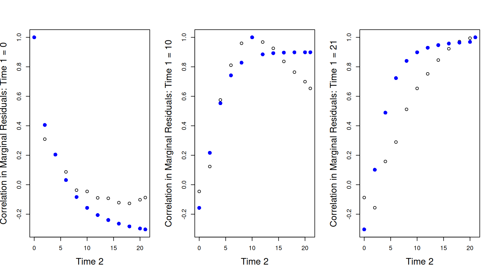
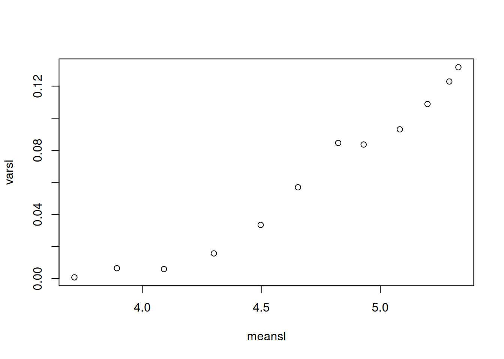
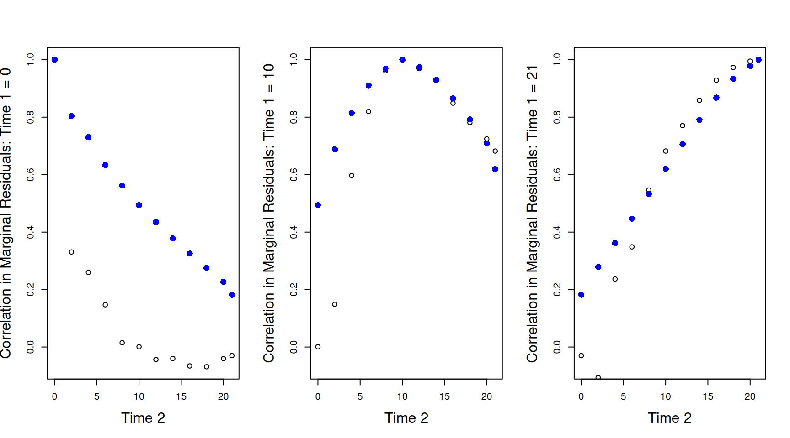

6 Continuous Random Interactions
In Chapter 5 we saw how we could define a set of random effects by specifying a linear model within a variance function and then interacting this term with a categorical predictor. In that Chapter, we used the random term ~us(virus):line in order to model \(\texttt{virus}\) by \(\texttt{line}\) interactions. Since the variance function model involved a categorical predictor (virus), and the intercept is omitted by default, it was not really necessary to fully engage with the idea that the variance function is taking a model formula - most users familiar with covariance matrices will be happy that ~us(virus):line specifies the covariance matrix:
\[{\bf V}_{{\color{red}{\texttt{line}}}}= \left[ \begin{array}{ccc} \sigma^{2}_{\color{blue}{\texttt{France}}}&\sigma_{\color{blue}{\texttt{France}, \texttt{Spain}}}&\sigma_{\color{blue}{\texttt{France}, \texttt{Greece}}}\\ \sigma_{\color{blue}{\texttt{France}, \texttt{Spain}}}&\sigma^{2}_{\color{blue}{\texttt{Spain}}}&\sigma_{\color{blue}{\texttt{Spain}, \texttt{Greece}}}\\ \sigma_{\color{blue}{\texttt{France}, \texttt{Greece}}}&\sigma_{\color{blue}{\texttt{Spain}, \texttt{Greece}}}&\sigma^{2}_{\color{blue}{\texttt{Greece}}}\\ \end{array} \right]\]
However, we are also free to use continuous covariates in the variance function model, or even a mixture of continuous and categorical predictors. Although the resulting covariance matrix is interpreted in the same way, it can be less intuitive.
6.1 Random Regression
As an example, we’ll use a longitudinal data set on chicken growth (See Figure 6.1).
## Grouped Data: weight ~ Time | Chick
## weight Time Chick Diet
## 1 42 0 1 1
## 2 51 2 1 1
## 3 59 4 1 1
## 4 64 6 1 1
## 5 76 8 1 1
## 6 93 10 1 1The data consist of body weights (weight) for 50 chicks (Chick) measured up to 12 times over a 3 week period. The variable Time is the number of days since hatching, and Diet is a four level factor indicating the type of protein diet the chicks received. The data are plotted in Figure 6.1.

Figure 6.1: Weight data of 50 chicks from hatching until three weeks old.
Growth curves tend to be sigmoidal and so one of the non-linear growth curves such as the Gompertz or logistic may fit the data well. However, these can be tricky to use and an alternative is to try and capture the form of the curve using polynomials. We’ll start with a quadratic function at the population level and and fit chick effects as random19.
prior.weight <- list(R = IW(1, 0.002), G = F(2, 10000))
mweight.1 <- MCMCglmm(weight ~ Time + I(Time^2) + Diet:Time, random = ~Chick, data = ChickWeight,
pr = TRUE, prior = prior.weight)I can hear the rule-of-thumbers squeal - I’ve fitted an interaction with \(\texttt{Diet}\), but no ‘main’ effect. Let’s think about the fixed effect part of the model. For the reference \(\texttt{Diet}\) (\(\texttt{Diet 1}\)) the linear model is
\[E[\texttt{weight} | \texttt{Diet}=1] = \beta_0+\beta_1\texttt{Time} + \beta_{2}\texttt{Time}^{2}\]
At hatching (\(\texttt{Time}\)=0) the expected weight of a chick is \(\beta_0\). The slope, \(\beta_1\), is a rate because it is in units of grams per day - it’s a growth rate. The quadratic term, \(\beta_2\), is in units of grams per day\(^{2}\) and represents acceleration, or more intuitively, the rate of change in the growth rate in units [grams per day] per day. At hatching, the growth rate is \(\beta_1\) but at other values of \(\texttt{Time}\) the growth rate is \(\beta_1+\beta_{2}\texttt{Time}\)20. For a non-reference \(\texttt{Diet}\) (for example, \(\texttt{Diet 2}\)) the model is
\[E[\texttt{weight} | \texttt{Diet}=\texttt{2}] = \beta_0+\beta_1\texttt{Time} + \beta_{2}\texttt{Time}^{2}+\beta_{3}\texttt{Time}\]
where \(\beta_{3}\) is the interaction effect, which will be labelled as \(\texttt{Diet2:Time}\) in the model output. The equation can be more easily understood with a little rearrangement:
\[E[\texttt{weight} | \texttt{Diet}=\texttt{2}] = \beta_0+\left(\beta_1+\beta_3\right)\texttt{Time} + \beta_{2}\texttt{Time}^{2}\]
At hatching the model predicts chicks on different diets to have the same expected weight (\(\beta_0\)). This is why I intentionally dropped the ‘main’ effect: at hatching the diet is yet to have an effect on the chick’s weight and since chicks were randomly assigned to a treatment they should be equivalent at \(\texttt{Time}\) 0. We could test this if we wished, but I’m prepared to trust the experimenters. After hatching, however, we may expect the diet to cause the weights of the chicks to diverge because it alters their growth rate. The difference in growth rate between \(\texttt{Diet 2}\) and \(\texttt{Diet 1}\) is \(\beta_{3}\). We’ve assumed that the effect of \(\texttt{Time}^{2}\) is constant over diets. This means that if the growth rates differ between the treatment groups, that difference remains constant: the growth rate on \(\texttt{Diet 2}\) at some value of \(\texttt{Time}\) is \(\beta_1+\beta_3+\beta_{2}\texttt{Time}\), and consistently differs from \(\texttt{Diet 1}\) by an amount \(\beta_\texttt{3}\) at all values of \(\texttt{Time}\).
Let’s have a look at the model summary:
##
## Iterations = 3001:12991
## Thinning interval = 10
## Sample size = 1000
##
## DIC: 5398.374
##
## G-structure: ~Chick
##
## post.mean l-95% CI u-95% CI eff.samp
## Chick 575.9 335.2 813.1 1000
##
## R-structure: ~units
##
## post.mean l-95% CI u-95% CI eff.samp
## units 610.5 529.4 679.2 1000
##
## Location effects: weight ~ Time + I(Time^2) + Diet:Time
##
## post.mean l-95% CI u-95% CI eff.samp pMCMC
## (Intercept) 38.09190 29.37737 46.23461 1000 <0.001 ***
## Time 3.66880 2.38609 4.84156 1000 <0.001 ***
## I(Time^2) 0.14632 0.09254 0.19570 1100 <0.001 ***
## Time:Diet2 1.80958 0.99523 2.48771 1000 <0.001 ***
## Time:Diet3 4.46028 3.79161 5.28554 1000 <0.001 ***
## Time:Diet4 2.94754 2.20819 3.70829 1140 <0.001 ***
## ---
## Signif. codes: 0 '***' 0.001 '**' 0.01 '*' 0.05 '.' 0.1 ' ' 1Hopefully the output is now familiar. At hatching the chicks weigh approximately 38 grams. On the reference diet the chicks are growing at a rate of 3.7 grams per day at the beginning (\(\texttt{Time}=0\)) but as they get older they start to grow faster (the coefficient associated with \(\texttt{Time}^2\) is positive). All diets seem to increase growth rate compared to \(\texttt{Diet 1}\).
While the explanation of how to interpret the fixed effects was perhaps laboured, it should be remembered that fixed and random effects are completely equivalent in how they enter the linear predictor (Chapter 4). If the explanation of the fixed effect part of the model is understood, then nothing new needs to be learned when we try to understand the chick effects. If we consider \(\texttt{Chick}\) \(i\) fed on the reference diet, its expected weight is:
\[E[\texttt{weight} | \texttt{Diet}=1, \texttt{Chick}=i] = \beta_0+\beta_1\texttt{Time} + \beta_{2}\texttt{Time}^{2}+u^{(0)}_i\]
where \(u^{(0)}_i\) is the random chick effect. The model assumes that chicks deviate consistently in their weight across time, but chicks do not deviate in their growth rate. Since we saved the random chick effects (pr=TRUE) we can obtain the predictions for each chick by specifying marginal=NULL (Section 4.2):
and we can add them to the \(\texttt{xyplot}\) plot as black lines (Figure 6.2).

Figure 6.2: Weights of each chick as a function of age (points). The mean growth curve was fitted as a quadratic function of \(\texttt{Time}\) with random chick intercepts (model mweight.1). The predicted weights are shown as lines.
The predictions don’t look too bad (but see Section 6.1.1), although you will notice that for some chicks (e.g. 7, 13 and 35) the slope of the predicted growth seems either too shallow, or too steep. As we did with the \(\texttt{Diet}\) by \(\texttt{Time}\) interaction, we could also allow our chicks to deviate in their growth rates and fit the model:
\[E[\texttt{weight} | \texttt{Diet}=1, \texttt{Chick}=i] = \beta_0+(\beta_1+u^{(1)}_i)\texttt{Time} + \beta_{2}\texttt{Time}^{2}+u^{(0)}_i \label{rr-eq} \tag{6.1}\]
where \(u^{(1)}_i\) is how much \(\texttt{Chick}\) \(i\)’s growth rate differs from the average (\(\beta_1\) for \(\texttt{Diet 1}\)). This type of model is often referred to as a random-regression model. To fit such a model we can replace Chick in the random formula with the term us(1+Time):Chick. The linear model inside the variance function has two parameters, an intercept (1 - which he have to specify explicitly21) and a regression slope associated with Time. Consequently, the interaction with \(\texttt{Chick}\) defines the set of coefficients:
\[\begin{array}{c|rrrrrc} &{\color{red}{\texttt{Chick1}}}&{\color{red}{\texttt{Chick2}}}&{\color{red}{\texttt{Chick3}}}&\dots\\ \hline {\color{blue}{\texttt{(Intercept)}}}&{\color{blue}{\texttt{(Intercept)}}}.{\color{red}{\texttt{Chick1}}}&{\color{blue}{\texttt{(Intercept)}}}.{\color{red}{\texttt{Chick2}}}&{\color{blue}{\texttt{(Intercept)}}}.{\color{red}{\texttt{Chick3}}}&\dots\\ {\color{blue}{\texttt{Time}}}&{\color{blue}{\texttt{Time}}}.{\color{red}{\texttt{Chick1}}}&{\color{blue}{\texttt{Time}}}.{\color{red}{\texttt{Chick2}}}&{\color{blue}{\texttt{Time}}}.{\color{red}{\texttt{Chick3}}}&\dots\\ \end{array}\]
Each chick now has an intercept and a slope, as in Equation (6.1), and because we have used the us variance structure we are estimating the \(2\times2\) matrix:
\[{\bf V}_{{\color{red}{\texttt{Chick}}}}= \left[ \begin{array}{cc} \sigma^{2}_{\color{blue}{\texttt{(Intercept)}}}&\sigma_{\color{blue}{\texttt{(Intercept)}, \texttt{Time}}}\\ \sigma_{\color{blue}{\texttt{(Intercept)}, \texttt{Time}}}&\sigma^{2}_{\color{blue}{\texttt{Time}}}\\ \end{array} \right]\]
\(\sigma^{2}_{\color{blue}{\texttt{(Intercept)}}}\) is the amount of variation in intercepts between chicks, and \(\sigma^{2}_{\color{blue}{\texttt{Time}}}\) is the amount of variation in the regression slopes between chicks (their growth rate). Note that our first model could also have been fitted using us(1):Chick (rather than just Chick) which may have made clearer the justification for calling the \(\texttt{Chick}\) effects in that model intercepts.
Let’s fit the random regression model:
mweight.2 <- MCMCglmm(weight ~ Time + I(Time^2) + Diet:Time, random = ~us(1 + Time):Chick,
data = ChickWeight, pr = TRUE, prior = prior.weight)
summary(mweight.2)##
## Iterations = 3001:12991
## Thinning interval = 10
## Sample size = 1000
##
## DIC: 4544.498
##
## G-structure: ~us(1 + Time):Chick
##
## post.mean l-95% CI u-95% CI eff.samp
## (Intercept):(Intercept).Chick 146.00 77.176 219.94 1000
## Time:(Intercept).Chick -37.70 -55.904 -22.19 1000
## (Intercept):Time.Chick -37.70 -55.904 -22.19 1000
## Time:Time.Chick 11.67 7.511 16.88 1000
##
## R-structure: ~units
##
## post.mean l-95% CI u-95% CI eff.samp
## units 133.1 115.5 149.6 984.1
##
## Location effects: weight ~ Time + I(Time^2) + Diet:Time
##
## post.mean l-95% CI u-95% CI eff.samp pMCMC
## (Intercept) 37.8003 33.8645 41.7408 1000 <0.001 ***
## Time 4.5223 3.3090 5.6356 1000 <0.001 ***
## I(Time^2) 0.1294 0.1074 0.1547 1000 <0.001 ***
## Time:Diet2 1.2520 -0.1042 2.5516 1129 0.070 .
## Time:Diet3 1.8390 0.3580 3.2278 1000 0.016 *
## Time:Diet4 2.8644 1.4744 4.2199 1000 <0.001 ***
## ---
## Signif. codes: 0 '***' 0.001 '**' 0.01 '*' 0.05 '.' 0.1 ' ' 1There seems to be substantial variation in growth rate between chicks after controlling for the diet treatment. The posterior mean of the slope variance is 11.67 which in terms of a standard deviation is 3.42 - larger than the effects of \(\texttt{Diet}\). Again, we can get the predicted weights from this model
and we can see that the fit is better (See Figure 6.3).

Figure 6.3: Weights of each chick as a function of age (points). Predictions are shown for models where the mean growth curve was fitted as a quadratic function of \(\texttt{Time}\) with random chick intercepts (black lines - model mweight.1) or random chick intercepts and slopes (red lines - model mweight.2).
In theory we could fit higher degree random regressions (data and prior permitting). For example, fitting random=~us(1+Time+I(Time^2)):Chick would allow the quadratic term for each Chick to deviate from the population mean and we would be estimating the \(3\times3\) covariance matrix:
\[{\bf V}_{{\color{red}{\texttt{Chick}}}}= \left[ \begin{array}{ccc} \sigma^{2}_{\color{blue}{\texttt{(Intercept)}}}&\sigma_{\color{blue}{\texttt{(Intercept)}, \texttt{Time}}}&\sigma_{\color{blue}{\texttt{(Intercept)}, \texttt{Time}^{2}}}\\ \sigma_{\color{blue}{\texttt{(Intercept)}, \texttt{Time}}}&\sigma^{2}_{\color{blue}{\texttt{Time}}}&\sigma_{\color{blue}{\texttt{Time}, \texttt{Time}^{2}}}\\ \sigma_{\color{blue}{\texttt{(Intercept)}, \texttt{Time}^2}}&\sigma_{\color{blue}{\texttt{Time}, \texttt{Time}^{2}}}&\sigma^{2}_{\color{blue}{\texttt{Time}^2}}\\ \end{array} \right]\]
6.1.1 Covariance Functions
One under-appreciated facet of random regression models is that when a polynomial of degree \(n\) is fitted, the variance in the response is predicted to change as a polynomial of order \(n+1\). For example, the covariance in \(\texttt{weight}\) between ages \(\texttt{Time}_1\) and \(\texttt{Time}_2\) within a diet is22
\[ \begin{array}{rl} \textrm{Cov}(\texttt{weight}_1, \texttt{weight}_2)=&\textrm{Cov}(u^{(0)}+u^{(1)}\texttt{Time}_1, u^{(0)}+u^{(1)}\texttt{Time}_2)\\ =&\sigma^2_{\texttt{(Intercept)}}+(\texttt{Time}_1+\texttt{Time}_2)\sigma_{\texttt{(Intercept)}, \texttt{Time}}+\texttt{Time}_1\texttt{Time}_2\sigma^2_{\texttt{Time}}\\ \end{array} \label{Crr-eq} \tag{6.2} \]
Consequently, the variance in \(\texttt{weight}\) due to the random terms is
\[ \begin{array}{rl} \textrm{Var}(\texttt{weight}) =&\sigma^2_{\texttt{(Intercept)}}+2\texttt{Time}\sigma_{\texttt{(Intercept)}, \texttt{Time}}+\texttt{Time}^2\sigma^2_{\texttt{Time}}\\ \end{array} \label{Vrr-eq} \tag{6.3} \]
Since we specified a 1st degree polynomial at the level of \(\texttt{Chick}\) (an intercept and slope) the variance is a 2nd degree polynomial of \(\texttt{Time}\) (it has a quadratic term, with coefficient \(\sigma^2_{\texttt{Time}}\)).
Because we can conceptualise the random regression in terms of the covariance between observations, rather than in terms of intercepts, slopes, and so on, random regression models are sometimes known as covariance function models. The function buildV returns the predicted variance of observations (and the covariances if diag=FALSE) after conditioning on the fixed effect model. As with the predict function, there is also the option to condition on some of the random effects (i.e. treat them as constants) by excluding them from the argument passed to marginal (see Section 4.2). However, the default is not to condition on them and so we can get the total predicted variance for each observation due to chick effects and the residuals. The residual variance in our model is constant, so the total variance is obtained by simply adding \(\sigma^2_{\textrm{units}}\) to Equation (6.3).
The predicted variance goes up dramatically with \(\texttt{Time}\) (red points in Figure 6.4). In contrast, model (mweight.1), where chicks do not vary in their growth rate, assumes that the variance is constant with \(\texttt{Time}\) (black points in Figure 6.4).

Figure 6.4: Predicted variance in weight due to random effects from model mweight.2.
The two models are dramatically different in how they predict the variance changes with \(\texttt{Time}\). This important difference isn’t really apparent from comparing their predictions with the data (Figure 6.3. However, if we obtain the 95% prediction intervals for the two models (the interval within which we expect to see 95% of observations)
pred.weight.1 <- predict(mweight.1, interval = "prediction")
pred.weight.2 <- predict(mweight.2, interval = "prediction")and overlay these on the data for all chicks plotted simultaneously, we see that our first model - that assumes constant variance - has serious problems (black lines in Figure 6.5). Initially, it predicts far more variability than observed, but after around \(\texttt{Time}\) 12 it predicts too little variability. The random slope model (red lines) does much better, although it still predicts too much variability initially, particularly at hatching.

Figure 6.5: Chick weights plotted against time with predicted mean weight (solid lines) and 95% predictions intervals (dashed line). The black line is for a random intercept model (mweight.1) that implicitly assumes the variance is constant over \(\texttt{Time}\). The red line is for a random intercept-slope model (mweight.2) that allows the variance to change as a quadratic function of \(\texttt{Time}\).
6.2 Heterogeneous Residual Variances
In Section 6.1.1 we ended with a random intercept-slope model of chick weight. We were fairly chuffed with it - not only did it seem to predict the expected response well (Figure 6.3), but in terms of the variance in the response, it was a massive improvement over the intercept-only model (Figure 6.5). Indeed, the \(\texttt{ChickWeight}\) data has become something of a classic for illustrating the power of random regression models. However, a number of issues remain with the model and it’s interpretation. We will address these issues in this section and the next.
The only way that our random intercept-slope model (model mweight.2) could accommodate an increase in the variance over \(\texttt{Time}\) was through the parameters of the (co)variance matrix of chick effects (Equation (6.3)). Consequently, a non-zero \(\sigma^2_\texttt{Time}\) may indicate that chick’s vary in their growth rate but it may also just be capturing increases in variance due to some other mechanism. Perhaps the evidence for a non-zero \(\sigma^2_\texttt{Time}\) is coming solely from how the variance in weight changes as a function of \(\texttt{Time}\) (i.e from Equation (6.3)) not from assessing whether weights from the same chick are correlated (i.e from Equation (6.2))? To see this, let’s take the \(\texttt{ChickWeight}\) data frame and permute \(\texttt{Chick}\) labels within each \(\texttt{Time}\) point.
ChickWeightPerm <- ChickWeight
ChickWeightPerm$Chick <- unlist(with(ChickWeight, tapply(Chick, Time, sample)))The \(\texttt{Chick}\) labels in this new data frame do not link multiple observations from the same chick, but let’s fit the same random regression model that we have fitted previously:
mweight.perm <- MCMCglmm(weight ~ Time + I(Time^2) + Diet:Time, random = ~us(1 +
Time):Chick, data = ChickWeightPerm, pr = TRUE, prior = prior.weight)Given the \(\texttt{Chick}\) labels are essentially meaningless, we might expect a model fitted to these permuted data would find no evidence for variation in chick intercepts or slopes. However, if we look at the posterior distributions for the variance in intercepts and slopes we see that there is very strong evidence that chicks vary in the growth rate (Figure 6.6).

Figure 6.6: Posterior distributions for the variances in chick intercepts and slopes. The model was fitted to a data set where chick labels at each time-point were randomised.
This is quite disconcerting - our model tells us that chicks systematically differ in their growth rate, yet we’ve jumbled the chick labels up in a way that weights from the same chick must be completely uncorrelated. How do we know that something similar isn’t happening with our original model? One option would be to allow the residual variance to change as a function of \(\texttt{Time}\) and so we can be sure that the information for estimating the random effect part of the model is really coming from the repeated nature of the observations.
In Section 6.1.1 we saw that we can think of random regression models in terms of the covariance between observations at pairs of values for the continuous predictor variable (Equation (6.3)). When the pair of values are the same, we obtain the variance of observations at a given value of the predictor (Equation (6.3)). We can use this idea to allow the residual variance to increase with the square of some covariate. Although I won’t discuss it here, \(\texttt{covu}\) models (Section ??) could be used to allow the residual variance to change as a polynomial function of the predictor with arbitrary degree.
To our model of chick weights lets add the term us(Time):units to the random part of the model.
mweight.3 <- MCMCglmm(weight ~ Time + I(Time^2) + Diet:Time, random = ~us(1 + Time):Chick +
us(Time):units, data = ChickWeight, pr = TRUE, prior = prior.weight, longer = 10)
summary(mweight.3)##
## Iterations = 30001:129901
## Thinning interval = 100
## Sample size = 1000
##
## DIC: 3155.614
##
## G-structure: ~us(1 + Time):Chick
##
## post.mean l-95% CI u-95% CI eff.samp
## (Intercept):(Intercept).Chick 8.736 0.5156 19.9539 471.8
## Time:(Intercept).Chick -5.844 -11.7612 -0.8111 321.4
## (Intercept):Time.Chick -5.844 -11.7612 -0.8111 321.4
## Time:Time.Chick 5.037 2.8220 7.6839 490.5
##
## ~us(Time):units
##
## post.mean l-95% CI u-95% CI eff.samp
## Time:Time.units 1.431 1.031 1.926 215.6
##
## R-structure: ~units
##
## post.mean l-95% CI u-95% CI eff.samp
## units 8.321 0.458 15.45 320
##
## Location effects: weight ~ Time + I(Time^2) + Diet:Time
##
## post.mean l-95% CI u-95% CI eff.samp pMCMC
## (Intercept) 40.43255 39.06057 41.47525 837.9 <0.001 ***
## Time 3.31023 2.36158 4.27471 499.1 <0.001 ***
## I(Time^2) 0.19681 0.17217 0.22287 393.0 <0.001 ***
## Time:Diet2 1.20502 0.07702 2.43222 891.6 0.038 *
## Time:Diet3 2.04874 0.82236 3.31371 669.7 0.006 **
## Time:Diet4 2.60724 1.39079 3.76669 1000.0 <0.001 ***
## ---
## Signif. codes: 0 '***' 0.001 '**' 0.01 '*' 0.05 '.' 0.1 ' ' 1The model mixes quite poorly, so I’ve ran it for 10 times longer than the default using the argument longer23. For a real analysis I would increase it even further, but the qualitative features of the posterior can be reliably assessed. The variance associated with us(Time):units lies roughly between one and two, and is certainly not zero. The (co)variances of the \(\texttt{Chick}\) effects have dramatically decreased compared to the model where us(Time):units was not fitted (model mweight.2).
What is the term us(Time):units fitting? The term units is factor with a unique level for each row of the data-frame. When we fit ~units (the default argument to rcov) we are simply fitting residuals. The term us(Time):units is fitting a slope effect for each level of units (note we have not included the intercept in the variance function). Let’s call the residual for observation \(i\), as specified by ~units, as \(e^{(0)}_i\) (rather than the usual \(e_i\)). Let’s call the random effect \(i\) specified by the term us(Time):units as \(e^{(1)}_i\) since it is the slope for observation \(i\) with respect to \(\texttt{Time}\). Then,
\[\sigma^2_e = Var(e^{(0)}+e^{(1)}\texttt{Time})=\sigma^2_{\texttt{units}}+\texttt{Time}^{2}\sigma^2_{\texttt{Time:units}}\]
This has the same form as Equation (6.3) although note that that it misses a term \(\sigma_{\texttt{Time:units}, \texttt{units}}\) and so the residual variance, \(\sigma^2_e\),is is forced to increase as \(\texttt{Time}\) gets larger.24
The reason that the (co)variances of the \(\texttt{Chick}\) effects has decreased is because the variability in weights is increasing over time, but our new model attributes part of this increase to things other than variation in growth rate. The model does a good job at predicting how the variance increases with \(\texttt{Time}\), and in particular predicts the variance at hatching much better than our previous model (Figure 6.7).

Figure 6.7: Chick weights plotted against time with predicted mean weight (solid lines) and 95% predictions intervals (dashed line). The red line is for a random intercept-slope model (mweight.2) that allows the variance to change as a quadratic function of \(\texttt{Time}\). The blue line is also for a random intercept-slope model (mweight.3) but the residual variance has been allowed to change with the square of \(\texttt{Time}\).
We can also look at how well the predicted means align with each chick’s growth curve. However, to make a fair comparison with other models we should marginalise us(Time):units so that the prediction doesn’t contain part of our ‘residual’ (\(\texttt{Time}*e^{(1)}\)):
If we overlay these predictions from our model that assumed a constant residual variance, we can see that the predictions for the mean are rather similar (Figure 6.8).

Figure 6.8: Weights of each chick as a function of age (points). Predictions are shown for models where the mean growth curve was fitted as a quadratic function of \(\texttt{Time}\) with random chick intercept and slopes. The residual variance is either assumed constant (red lines - model mweight.2) or to change with square of \(\texttt{Time}\) (blue lines - model mweight.3).
However, I would argue that in terms of predicting the mean, the model that assumed constant residual variance actually does slightly better than our new model. Both models also show autocorrelation in their residuals - we see runs of data-points lying consistently above, or consistently below, the prediction lines (for example \(\texttt{Chick 43}\)). If we plot the residuals from our predictions, these patterns are much more obvious (Figure 6.9).

Figure 6.9: Weights of each chick as a function of age (points). Predictions are shown for models where the mean growth curve was fitted as a quadratic function of \(\texttt{Time}\) with random chick intercept and slopes. The residual variance is either assumed constant (red lines - model mweight.2) or to change with square of \(\texttt{Time}\) (blue lines - model mweight.3).
We are in a tricky situation. The model with non-constant residual variance does a better job at catching the patterns in the data. If it did not, the variance associated with the term us(Time):units should be zero, and it is clearly not. However, when we focus on specific aspects of the data (e.g. the predicted means) it does a slightly poorer job. The central issue here is that both models have their inadequacies, and without fixing them it might be hard to draw very firm conclusions. While dissatisfying, it is the reality, and previous random-regression tutorials that have used the \(\texttt{ChickWeight}\) data set as an example rarely touch on the difficulties and subtleties of the approach. However, as is often the case, in Section 6.4 we will see that the log-transform can come to our rescue. First, let’s return to the issue of autocorrelation.
6.3 Autocorrelation
In Figure 6.9 we plotted a time series for the residuals of each chick. Neighbouring residuals were much more likely to have the same sign than a random pair of residuals, indicating positive autocorrelation in the residuals over short time scales: two observations close in time are more similar to each other than our model predicts. Conversely, those time series where the middle residuals fall below the zero line tend to have terminal residuals that fall above the line, and vice versa: at longer time scales we see negative autocorrelation in the residuals and our observations are less similar to each other than our model predicts.
A way to visualise these issues more clearly is to think about the corelations we see in our data between observations made on the same chicks at different times, and compare these to what the model predicts. We can use the function \(\texttt{buildV}\) to obtain the expected (co)variances in our data due to the random effects we choose to marginalise and the residuals. The default is to marginalise all random effects which will give us the covariances due to both chick effects and residuals:
Note that we need to specify diag=FALSE. This returns an \(n\times n\) (sparse) covariance matrix for the data-frame, where \(n\) is the number of observations (578 in this case). Since we are assuming that the covariance structure for each chick is the same we can just extract the covariance structure for the first chick (which has a complete time series of 12 observations)25. We can also turn the \(12\times 12\) covariance matrix into a correlation matrix since we have already assessed how well the model does at predicting the scale of the observations (Figure 6.7).
This is a matrix of expected correlations in weights at different ages after controlling for the fixed effect part of the model. To obtain the observed correlations, we need to calculate the correlation in the deviations of the chick’s weights from their predicted values. Note that these predicted values should be based on the fixed effect part of the model only, and the chick effects need to be marginalised (the default for \(\texttt{predict}\)).
I will refer to these as marginal residuals to distinguish them from the residual plotted in Figure 6.9 which include the chick effects in the prediction. We can reshape \(\texttt{ChickWeight}\) into wide format where each row is a chick and the marginal residuals at different ages are columns:
chick.wide <- reshape(ChickWeight[, c("marginal.resid", "Chick", "Time")], v.names = "marginal.resid",
idvar = "Chick", timevar = "Time", direction = "wide")
head(chick.wide[, 1:5])## Chick marginal.resid.0 marginal.resid.2 marginal.resid.4 marginal.resid.6
## 1 1 1.5674476 3.159771 2.1776546 -3.3789029
## 13 2 -0.4325524 1.159771 1.1776546 4.6210971
## 25 3 2.5674476 -8.840229 -1.8223454 -0.3789029
## 37 4 1.5674476 1.159771 -0.8223454 -0.3789029
## 49 5 0.5674476 -5.840229 -8.8223454 -7.3789029
## 61 6 0.5674476 1.159771 2.1776546 6.6210971From this we can calculate the observed \(12\times 12\) correlation in the marginal residuals.
Note that we needed to specify use="pairwise.complete.obs" because some chicks have missing values at later times, presumably because they died - an issue I will return to in Section ??. The theoretical and observed correlations are shown in blue and black respectively (Widget 6.1)
See code
persp3d(x = unique(ChickWeight$Time), y = unique(ChickWeight$Time), z = empiricalC,
xlab = "Time 1", ylab = "Time 2", zlab = "correlation", aspect = c(1, 1, 0.5),
col = "black", front = "lines", back = "lines", diagonal = "back")
persp3d(x = unique(ChickWeight$Time), y = unique(ChickWeight$Time), z = theoreticalC.3,
add = TRUE, col = "blue")The diagonal ridge has a height of one: observations are perfectly correlated with themselves. Close to the ridge, the observed correlations are larger than that predicted (the red wire-frame is above the blue surface) particularly at later ages. This indicates that the autocorrelation is stronger at small time-scales than our model predicts. As we move further away from the ridge the observed correlations become smaller than our predicted correlations indicating that at medium time-scales the autocorrelation is weaker than our model predicts. Finally, the model is very poor at predicting the correlation between hatching and all other values of \(\texttt{Time}\): the observed correlation starts of strong and eventually becomes weakly negative, whereas the predicted correlation quickly drops to strongly negative values.
Three dimensional plots can be confusing. We can also plot the correlations between a specific time-point and all others. These plots are sometimes referred to as variograms. In Figure ?? we have the empirical (black circles) and theoretical (blue points) correlations between weights at each time with the weight at hatching (\(\texttt{Time}=0\) - left), the mid-point (\(\texttt{Time}=10\) - middle) or the end (\(\texttt{Time}=21\) - right). The discrepancies between the model and the data are quite striking, particularly for the hatching weights (\(\texttt{Time 1}=0\)) where the model predicts very strong negative correlations which are much more modest in reality. In addition, in all panels there is a discontinuity for the theoretical correlations when \(\texttt{Time 1}=\texttt{Time 2}\) whereas empirically, the correlations go much more smoothly to one as \(\texttt{Time 1}=\texttt{Time 2}\). This continuity is due to the residual terms us(Time):units and units which contribute to the variance (i.e. the covariance when \(\texttt{Time 1}=\texttt{Time 2}\)), but the covariance/correlations between different values of \(\texttt{Time}\) (i.e. the covariance when \(\texttt{Time 1}\neq\texttt{Time 2}\)). In the geostatistical literature this is often referred to as the ‘nugget effect’ and is visible in Widget 6.1 by viewing from the origin.

6.4 Variance stabilisation
The variance in chick weight increases dramatically with \(\texttt{Time}\) and it requires effort to understand how this aspect of the data is captured by random-regression models. We also saw that while modelling the change in variance accurately improved our models ability to capture general features of the data, it did compromise our ability to predict some aspects, such as the predicted means. In addition to the variance, the mean chick weight also increased dramatically in time, and we managed to model this fairly intuitively by fitting \(\texttt{Time}\) and \(\texttt{Time}^2\) in the fixed effect formula.
Let’s start by plotting the means and standard deviations for each \(\texttt{Time}\) (Figure 6.10).

Figure 6.10: Standard deviation of chick weight against the mean over $ exttt{Time}$
A remarkably tight and linear relationship. A linear relationship between the standard deviation and the mean, or the variance and the mean squared, is often the hall-mark of a multiplicative process - chick don’t add \(x\) grams to their weight per unit time, they increase their weight be \(x\)% per unit time. Log transforming the outcome of a multiplicative process makes it additive and very often reduces, or even uncouples, any relationship between the mean and variance.
abline(lm(sds~means))
mweight.4 <- MCMCglmm(log(weight) ~ Time + I(Time^2) + Diet:Time, random = ~Chick,
data = ChickWeight, pr = TRUE, prior = prior.weight)
mweight.5 <- MCMCglmm(log(weight) ~ Time + I(Time^2) + Diet:Time, random = ~us(1 +
Time):Chick, data = ChickWeight, pr = TRUE, prior = prior.weight)
mweight.6 <- MCMCglmm(log(weight) ~ Time + I(Time^2) + Diet:Time, random = ~us(1 +
Time):Chick + us(Time):units, data = ChickWeight, pr = TRUE, prior = prior.weight)
pweight.4 <- predict(mweight.4, marginal = NULL)
pweight.5 <- predict(mweight.5, marginal = NULL)
pweight.6 <- predict(mweight.6, marginal = ~us(Time):units)
Figure 6.11: Weights of each chick as a function of age (points). Predictions are shown for models where the mean growth curve was fitted as a quadratic function of $\(\texttt{Time}\) with random chick intercept and slopes. The residual variance is either assumed constant (red lines - model mweight.2) or to change with square of \(\texttt{Time}\) (blue lines - model mweight.3).
Figure 6.12: Log chick weights plotted against time with predicted mean weight (solid lines) and 95% predictions intervals (dashed line). The black line is for a random intercept model (mweight.4) that implicitly assumes the variance is constant over \(\texttt{Time}\). The red line is for a random intercept-slope model (mweight.5) that allows the variance to change as a quadratic function of \(\texttt{Time}\). The blue line is also for a random intercept-slope model (mweight.6) but ………
## Chick marginal.resid.l.0 marginal.resid.l.2 marginal.resid.l.4
## 1 1 4.884163e-02 0.05300698 0.023517360
## 13 2 5.146921e-05 0.01300165 0.006422927
## 25 3 7.237213e-02 -0.21525700 -0.046686899
## 37 4 4.884163e-02 0.01300165 -0.028668393
## 49 5 2.474408e-02 -0.14114903 -0.182819073
## 61 6 2.474408e-02 0.01300165 0.023517360
## marginal.resid.l.6
## 1 -0.055549202
## 13 0.062233834
## 25 -0.009739666
## 37 -0.009739666
## 49 -0.120087723
## 61 0.089632808Widget log random regression

6.5 Antedependence Models
prior.7 <- list(R = list(V = diag(1), nu = 0.002, beta.mu = rep(0, 3), beta.V = diag(3) *
10000))
mweight.7 <- MCMCglmm(weight ~ Time + I(Time^2) + Diet:Time, rcov = ~antec3v(as.factor(Time)):Chick,
data = ChickWeight, prior = prior.7, pr = TRUE)
pweight.7 <- predict(mweight.7, marginal = NULL)
prior.8 <- list(R = IW(1, 0.002), G = list(G1 = list(V = diag(1), nu = 0.002, beta.mu = 0,
beta.V = 10000), G2 = IW(1, 0.002)))
mweight.8 <- MCMCglmm(weight ~ Time + I(Time^2) + Diet:Time, random = ~antec1v(as.factor(Time)):Chick +
us(Time):units, data = ChickWeight, prior = prior.8, pr = TRUE)
# theoreticalC.7<-matrix(colMeans(mweight.7$VCV[,1:(12^2)]),
# 12,12)+diag(12)*mean(mweight.7$VCV[,1+(12^2)])
theoreticalC.7 <- matrix(colMeans(mweight.7$VCV), 12, 12)
Figure 6.13: Chick weights plotted against time with predicted mean weight (solid lines) and 95% predictions intervals (dashed line). The black line is for a 1st order antedependence model (mweight.7). The red line for a 1st order antedependence model (mweight.8) but ………
Under-predicts. Probably OK. Correcting for Selection bias.
prior.9 <- list(R = list(V = diag(1), nu = 0.002, beta.mu = rep(0, 3), beta.V = diag(3) *
10000))
mweight.9 <- MCMCglmm(log(weight) ~ Time + I(Time^2) + Diet:Time, rcov = ~antec3v(as.factor(Time)):Chick,
data = ChickWeight, prior = prior.7, pr = TRUE)
pred.weight.9 <- predict(mweight.6, interval = "prediction")
mean.9 <- tapply(pred.weight.9[, 1], ChickWeight$Time, mean)
lower.9 <- tapply(pred.weight.9[, 2], ChickWeight$Time, mean)
upper.9 <- tapply(pred.weight.9[, 3], ChickWeight$Time, mean)
plot(log(ChickWeight$weight) ~ ChickWeight$Time, ylim = range(c(log(ChickWeight$weight),
lower.4, upper.4, lower.5, upper.5, lower.6, upper.6)), ylab = "Log Weight",
xlab = "Time (days)")
lines(mean.9 ~ unique(ChickWeight$Time))
lines(lower.9 ~ unique(ChickWeight$Time), lty = 2)
lines(upper.9 ~ unique(ChickWeight$Time), lty = 2)
## Chick marginal.resid.l.0 marginal.resid.l.2 marginal.resid.l.4
## 1 1 0.027249317 0.07748625 0.08770186
## 13 2 -0.021540847 0.03748092 0.07060743
## 25 3 0.050779814 -0.19077774 0.01749760
## 37 4 0.027249317 0.03748092 0.03551611
## 49 5 0.003151765 -0.11666976 -0.11863457
## 61 6 0.003151765 0.03748092 0.08770186
## marginal.resid.l.6
## 1 0.04197417
## 13 0.15975721
## 25 0.08778371
## 37 0.08778371
## 49 -0.02256435
## 61 0.18715618Widget log ante

I will refer to these as marginal residuals to distinguish them from the residual plotted in Figure 6.9 which include the chick effects in the prediction. We can reshape \(\texttt{ChickWeight}\) into wide format where each row is a chick and the marginal residuals at different ages are columns:
chick.wide <- reshape(ChickWeight[, c("marginal.resid", "Chick", "Time")], v.names = "marginal.resid",
idvar = "Chick", timevar = "Time", direction = "wide")
pweight.4 <- predict(mweight.4, marginal = NULL)
pweight.5 <- predict(mweight.5, marginal = NULL)
pweight.6 <- predict(mweight.6, marginal = ~us(Time):units)6.6 User-defined Design Matrices
\(\texttt{MCMCglmm}\) generally uses \(\texttt{model.matrix}\), or a native equivalent, when evaluating a model formula to obtain the design matrices. Sometimes R formula syntax is not flexible enough to generate the appropriate design matrix. However, if a random-effect design matrix can be generated, it is possible to fit the model by exploiting the \(\texttt{idv}\) variance structure. However, the parameters defined by the formula in the \(\texttt{idv}\) structure should not be interacted with another factor. Consider the term ~idv(z1+z2+z3+z4):1 and let’s set up the table of random effects as we have before:
\[\begin{array}{c|c} &{\color{red}{\texttt{(Intercept)}}}\\ \hline\\ {\color{blue}{\texttt{z1}}}&{\color{blue}{\texttt{z1}}}.{\color{red}{\texttt{(Intercept)}}}\\ {\color{blue}{\texttt{z2}}}&{\color{blue}{\texttt{z2}}}.{\color{red}{\texttt{(Intercept)}}}\\ {\color{blue}{\texttt{z3}}}&{\color{blue}{\texttt{z3}}}.{\color{red}{\texttt{(Intercept)}}}\\ {\color{blue}{\texttt{z4}}}&{\color{blue}{\texttt{z4}}}.{\color{red}{\texttt{(Intercept)}}}\\ \end{array}\]
An \(\texttt{idv}\) structure, like an \(\texttt{idh}\) structure, assumes no correlation between effects on different rows: the \(\texttt{id}\) in \(\texttt{idh}\) stands for identity matrix. The \(\texttt{h}\) in \(\texttt{idh}\) stands for heterogeneous and so each row is allowed a different variance. Clearly, with only one effect per row estimating a variance is not feasible. However, with \(\texttt{idv}\) the variances are assumed homogenous and so only a single variance (the \(\texttt{v}\) in \(\texttt{idv}\)) is estimated that is common to all effects. The (four) regression coefficient are then treated exactly like simple random effects: identically and independently distributed with zero mean and a variance to be estimated. When there are many random effects, writing ~idv(z1+z2+z3+z4+...z999+z1000):1 is going to be painful to write and read. However, you can simply including the design matrix as a matrix in the data-frame and fit it inside the \(\texttt{idv}\) structure.
The multi-membership model fitted in Section 5.2.2 is a case in point. In that example, each child had five friends and we would like to fit \(\texttt{friend}\) as a random effect that predicts the child’s well-being. We can take a look at the random effect design matrix for that model:
## A B C D E F G H I J K L M N O P Q R S T U V W X Y Z
## 1 0 1 0 0 0 0 1 0 0 1 0 1 1 0 0 0 0 0 0 0 0 0 0 0 0 0
## 2 0 0 0 0 0 0 0 0 0 0 0 0 1 1 0 0 0 0 1 1 0 0 0 1 0 0
## 3 1 1 0 0 1 0 0 0 0 0 0 0 0 0 0 0 0 0 0 1 0 0 0 0 1 0
## 4 1 0 0 0 0 0 0 0 1 1 0 1 0 0 0 0 1 0 0 0 0 0 0 0 0 0
## 5 0 1 0 0 1 0 0 0 0 0 0 0 0 0 0 0 1 0 1 0 0 0 0 1 0 0
## 6 0 0 0 1 0 0 0 0 0 0 1 0 1 1 1 0 0 0 0 0 0 0 0 0 0 0The row for each child has five ones indicating their friends. This design matrix cannot be created using a standard R formula and the multi-membership linking function ~mm(freind.1+freind.2+freind.3+freind.4+freind.5) was used to create the design matrix. However, if we had the incidence matrix, we could place it in the data-frame and fit an identical model:
data.friends$Z <- Z
m.mm2 <- MCMCglmm(y ~ 1, random = ~idv(Z), data = data.friends, prior = prior.mm)Note that there is no need to explicitly interact the \(\texttt{idv}\) structure with an intercept (in fact \(\texttt{MCMCglmm}\) will complain if you try). In this example, the predictor variables (\(\texttt{freind}\)) are categorical, but there is nothing to stop design matrices from being formed using continuous predictors, as we’ll see in the next section on splines.
6.7 Splines
The function \(\texttt{smspline}\) in \(\texttt{lmeSplines}\) can be used to generate design matrices for penalised splines that are transformed such that the random effects are expected to be identically and independently distributed with unknown variance. Using the ideas discussed above for user-specified design matrices (Section 6.6) we can use an \(\texttt{idv}\) structure to fit the spline. However, rather than generating the design matrix outside of \(\texttt{MCMCglmm}\) and adding it to the data-frame, we can simply use the \(\texttt{smspline}\) function inside \(\texttt{idv}\). For example, we can fit a penalised cubic spline to one of the test data sets in \(\texttt{lmeSplines}\):
spline.prior = list(R = IW(1, 0.002), G = F(1, 1000))
m.spline <- MCMCglmm(y ~ time, random = ~idv(smspline(time)), data = smSplineEx1,
pr = TRUE, prior = spline.prior)The random effects need to be saved (pr=TRUE) because these are the coefficients of the spline. Similarly, when making a prediction we want to include the spline coefficients in the prediction, rather than marginalising them (Section 4.2).
The model wiggles its way through the data, as splines do …

Figure 6.14: Data and prediction from a penalised cubic spline fitted to the example data \(\texttt{smSplineEx1}\) from \(\texttt{lmeSplines}\)
Note that I specified the prior using a prior generator function (Sections 2.6 and 5.3) but I upped the scale to 10,000 from the usual 1,000 because of the scale of the data. However, using a scale of 1,000 generates an almost identical posterior in this instance.↩︎
Taking the derivative of \(E[y | \texttt{Diet}=1]\) with respect to \(\texttt{Time}\) gives us the rate.↩︎
Remember that a global intercept is not fitted by default for variance structure models, and the model formula is essentially
~virus-1. To add the global intercept,us(1+virus):linecould be fitted but this can be harder to interpret because the effects are thenFrance,Spain-FranceandGreece-France. If a \(\texttt{us}\) structure is fitted, the two models are equivalent reparameterisations of each other although the priors have to be modified accordingly. This is not the case if the variance function is \(\texttt{idh}\). In this case the virus-specific variances are allowed to vary as before, but a constant covariance equal to \(\sigma^{2}_{\color{blue}{\texttt{France}}}\) is also assumed↩︎In this formula \(\texttt{Time}\) is fixed and the random effects are random variables: the covariance is over chicks. The general rules for obtaining a covariance are:
a) The covariance between sums is the sum of the covariances between their summands. For example \(\textrm{Cov}(a+b, c+d) = \textrm{Cov}(a, b)+\textrm{Cov}(a, c)+\textrm{Cov}(b, c)+\textrm{Cov}(b, d)\).
b) The covariance between products, for example \(\textrm{Cov}(ab, cd)\), is often a nightmare unless only one of the variables on each side is random and the remainder are constants. For example, if \(a\) and \(c\) are constants and \(b\) and \(d\) are random \(\textrm{Cov}(ab, cd)=ac\textrm{Cov}(b, d)\).
c) The covariance between a constant and a random variable is zero.
d) And finally, \(\textrm{Var}(b)=\textrm{Cov}(b, b)\).↩︎longertakes a positive integer and multiplies the argumentsnitt,thinandburnin(which in this example were at there defaults, 13,000, 10 and 3,000)↩︎covumodels can overcome this constraint, or we could fit the reverse of \(\texttt{Time}\) if we wanted a negative relationship (i.e. a covariate which is zero at day 21, one at day 20, two at day 19 and so on).↩︎To do this by hand, we need to add the covariances up due to the three terms in the model:
us(1+Time):Chickandus(Time):unitsin the random formula, andunitsin \(\texttt{rcov}\). Forus(1+Time):Chick, subset the random effect design matrix that is relevant for the \(i\)th \(\texttt{Chick}\) effects. Lets call this \({\bf Z}_i\) which will have 12 rows (one for each observation) and two columns. The first column will be all ones (since it is the predictor for the intercept) and the second column will contain the 12 unique values of \(\texttt{Time}\). The covariance due to chick effects is then \({\bf Z}_i{\bf V}_\texttt{Chick}{\bf Z}_i^{\top}\) where \({\bf V}_\texttt{Chick}\) is the (co)variance matrix of intercepts and slopes. To this, we need to add the (co)variance matrix due to theus(Time):units. Again, subset the random effect design matrix that is relevant for the 12 \(\texttt{unit}\) effects associated with \(\texttt{Chick}\) \(i\). Again, the matrix \({\bf Z}_u\) has 12 rows, one for each observation. However, it has 12 columns since the there is a separate \(\texttt{unit}\) effect for each observation. \({\bf Z}_u\) is diagonal, with the diagonals being the 12 unique values of \(\texttt{Time}\). The covariance due tous(Time):unitsis \({\bf Z}_u\sigma^2_\texttt{Time:units}{\bf Z}_u^{\top}\). Finally, we need to add the covariance due tounitswhich is \({\bf I}\sigma^2_\texttt{units}\) since we are assuming the residuals are independent with constant variance \(\sigma^2_\texttt{units}\) (\({\bf I}\) is a \(12\times 12\) identity matrix). These operations follow from the rules outlined in Section 6.1.1 and the footnote above[^cov].↩︎